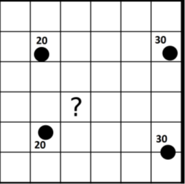
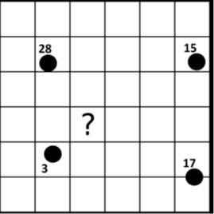

Métodos de interpolación.
El objetivo de este tema es dar a conocer los principales métodos de interpolación.
Así, daremos respuesta a preguntas como:
 
¿Qué valor es el de esta celda? ¿Qué valor es el de esta celda?
La lógica nos indica que el valor que buscamos ha de ser inferior a 30 y más cercano a 20 ya que la celda problema se sitúa más cerca de ese valor medio.
Razonando de este modo, aplicamos el hecho de que la proximidad incrementa la semejanza de valores. Es decir, que existe autocorrelación espacial para la variable interpolada.
No parece tan sencillo “adivinar” el valor que corresponde:
La autocorrelación espacial de la variable, no resulta tan obvia. Utilizando distintos métodos de interpolación, puede ser que obtengamos valores distintos.